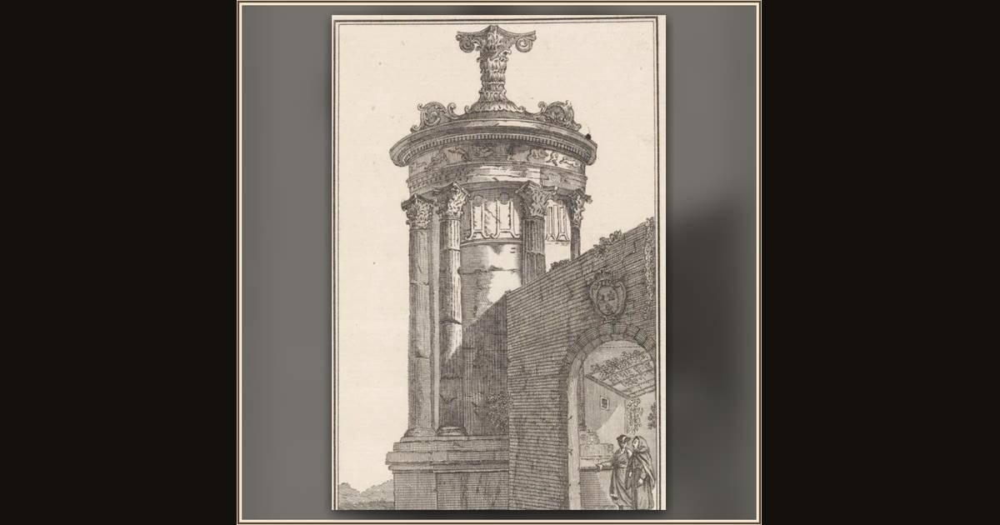

Monument van Lysicrates in Athene
Antoni Zürcher · 1765 - 1837 · rijksmuseum
An etching shows the columned Monument of Lysicrates in Athens; Aristotle lists public buildings and splendidly equipped choruses as worthy expenditures for the magnificent person (4.2). Explore its place in Aristotle's Nicomachean Ethics, Book IV, section 2.